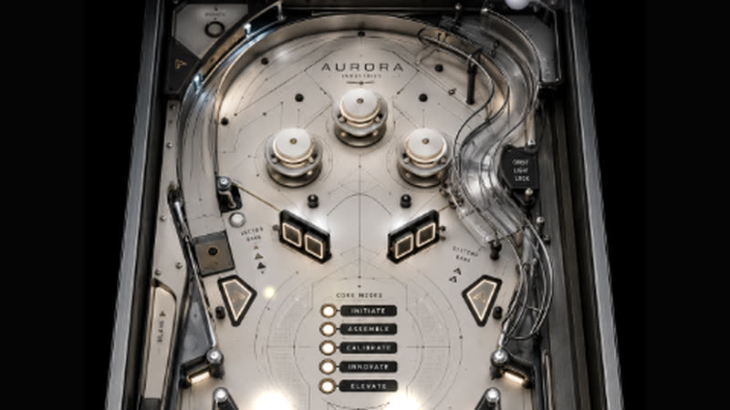

Games
インタラクティブな体験とクリエイティブコーディング。ゲーム制作は「制約のないデザイン」。
01


Procedural Endless Runner
Void Runner
プロシージャル生成の無限ランナー。光と闇のコントラストで構成されたミニマルな世界を走り抜ける。
02One-Button Ring Runner
Orbit
二重の軌道を巡るリングランナー。タップでレーンを切り替え、光を集めて棘を避ける。
03Precision Tower
Stack
滑るスラブを落として塔を積む。ぴったり重ねるとコンボ。
04
Spec · Physics Pinball
Aurora Pinball
物理エンジンで動く本格ピンボール。ゴールドの架空テーブル（Spec）。